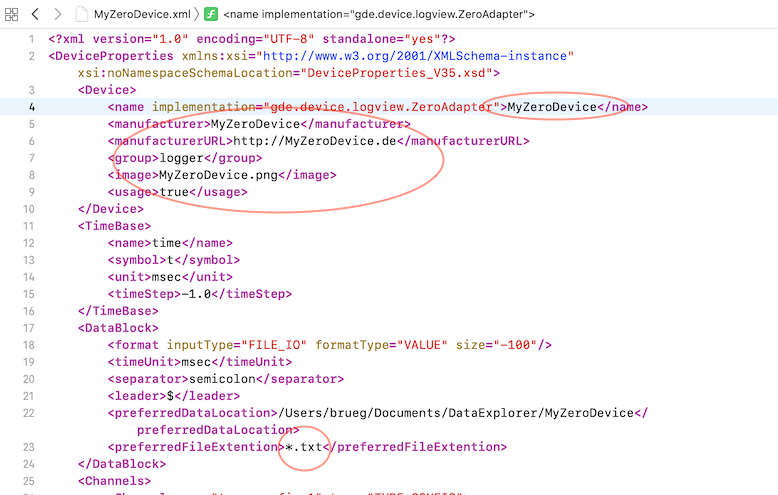
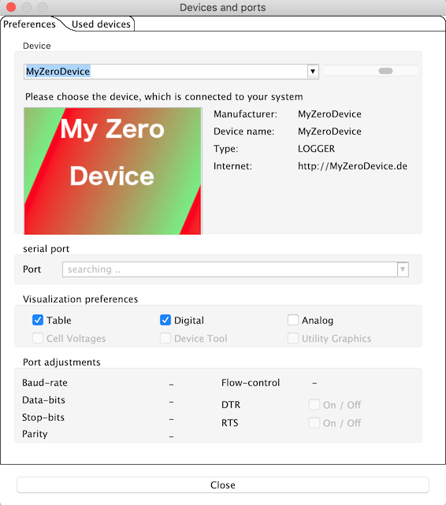
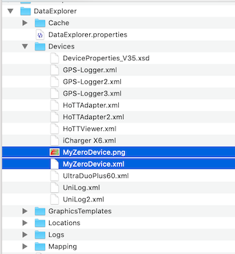

The ability to import and evaluate CSV files following the "LogView OpenFormat Zero" is provided by the ZeroAdapter.
Presumably the name ZeroAdapter will not fit the project. Nevertheless, you should read in your CSV files, any file extension, once with the ZeroAdapter. This will set up a device configuration file according to the configuration in the file, matching the data. Now you can quit the program DataExplorer to make further adjustments to your project.
Only now you should change the name of the device configuration to match the project. The ZeroAdapter.xml file is located in the folder where the program settings are stored.

The places where an adjustment makes sense are highlighted. The device name must match the name of the XML file.
If the name of the device, here "MyZeroDevice", is changed, this name will later be displayed in the device selection.

If you want to see your own icon when selecting a device, an image file of 235x165 pixels can be copied directly into the folder in which the device configuration file is located. Do not forget to adapt the icon file name in device XML.

The device dialog will also follow the naming. The dialog shown serves to configure the display of the data imported. The measurement names, measurement symbols and measurement units could be adapted. But that does not make sense, since these names are given by the configuration within the log file. Only supplements could be made. Are measurement available, such as longitude and latitude, and you do not want to show them in the graph, they can be deselected by the leftmost switch. Unselected measurements then temporarily do not appear in the graphic display. On the other hand, if curves are hidden by missing data, this can be checked by double selection. Via a file selection dialog, accessible via "import file", new files can also be imported. Curves that contain no meaningful data are automatically hidden. While existing GPS coordinates additional export options get displaed. So as example as Google Earth files (KMZ), or KML can be displayed directly in Google-Earth application. For further description see Toolbar -> Google Earth.
On the right side of the display configuration is an additional switch that allows semi-automatic synchronization of the scales. If you select here, the measurement name first 4 characters and unit match is checked. While a match is detected, the appropriate property is used in the device configuration file for the measured values. Synchronization reference always to the first measurement match in the list of measurements as ordinal. This ordinal value get displayed next to the check box to help identifying the measurement which get referenced. This measurement can not reference to itself and therefore can not be selected. If this does not work automatically, there is still the possibility to set this manually via the device configuration editor. Scale synchronization increases the available display area and can directly compare sensor values without using the curve comparison.
The device properties editor allows you to configure a scale synchronization for any measurement curve. But the whole thing only makes sense if the value ranges match.
To see the full possibilities of the DataExplorer with the statistical evaluations refer to Window "Statistics".
Hint: It doesn't make sense to change measurement names. Measurement name, unit and symbol comes from the configuration of the data record at the beginning of the Openfromat Zero file. If the device configuration file name (DeviceProperties_Vxy.xsd) changes in a later version of DataExplorer, a backup of all existing device configuration files is created (Devices_Vxy-1) and nothing get lost. By simply changing the version number of the schema reference, you can easily copy device configuration files. Descriptions to LogView OpenFormat Zero could be find at Internet.